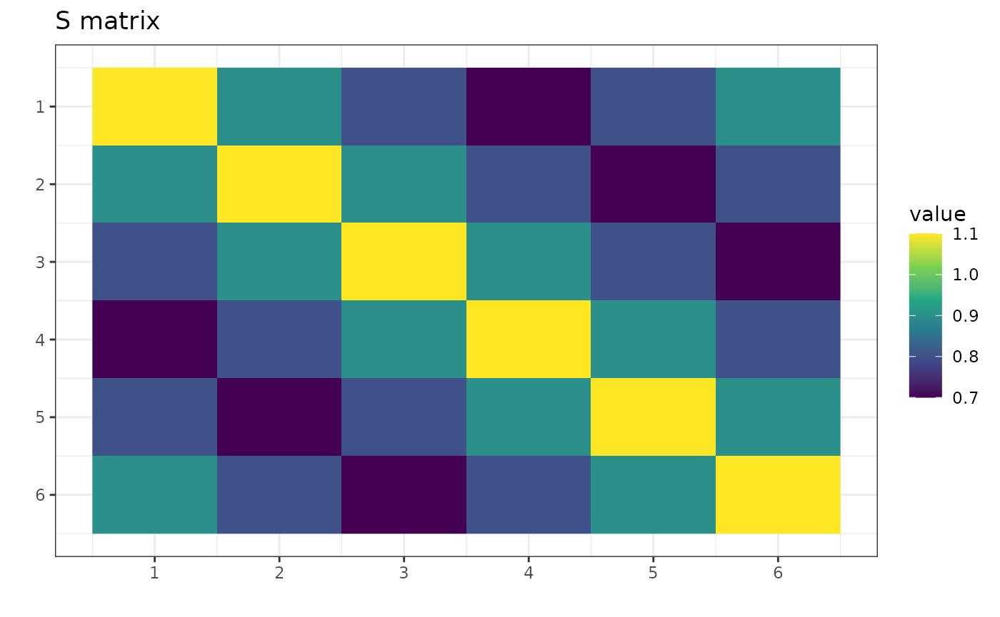
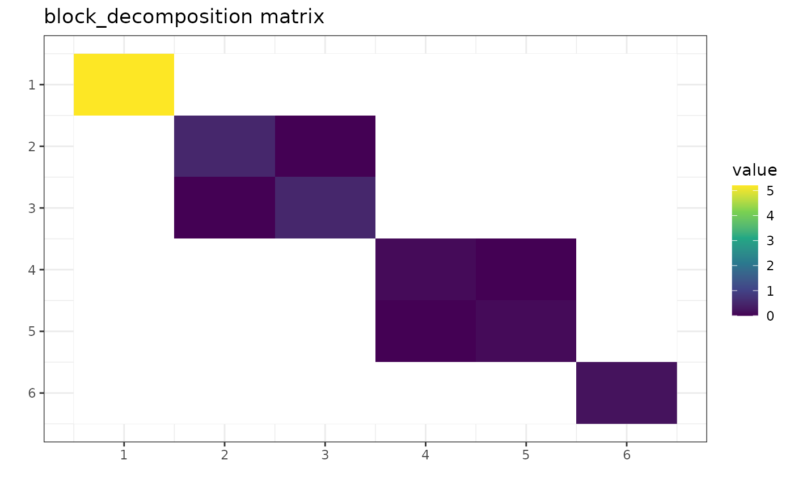
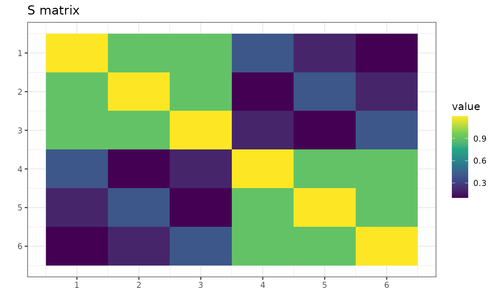
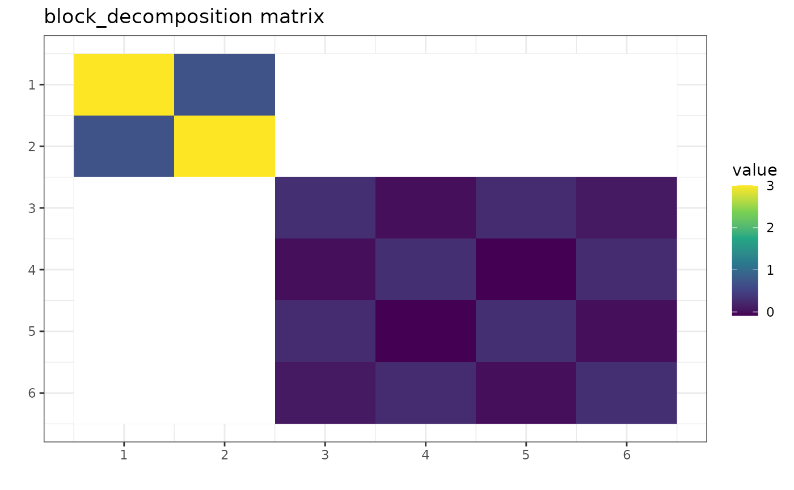
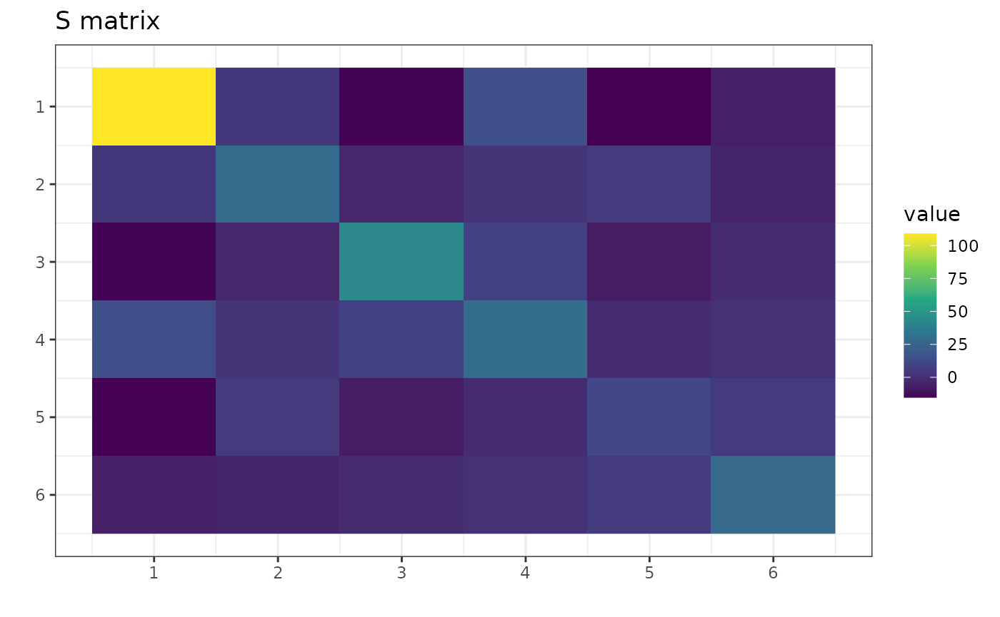
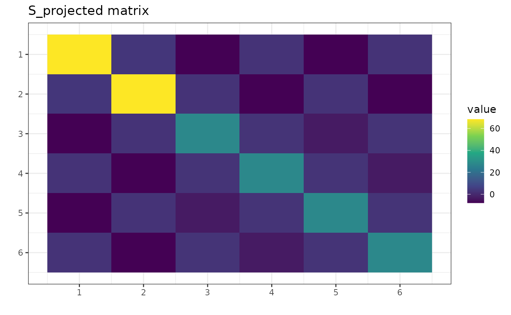
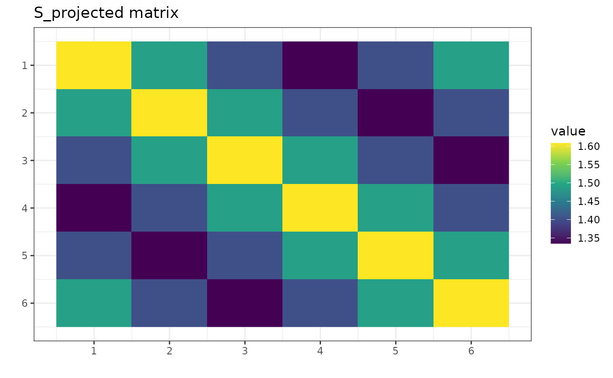

What the gips is based on
The package is based on the article [1]. There the math behind the package is precisely demonstrated, and all the theorems are proven.
In this vignette, we present a gentle introduction. We want to point
out all the most important results from this work from the user’s point
of view. We will also show examples of those results in the
gips package.
As mentioned in the abstract, the outline of the paper is to “derive
the distribution of the maximum likelihood estimate of the covariance
parameter \(\Sigma\) (…)” and then to
“perform Bayesian model selection in the class of complete Gaussian
models invariant by the action of a subgroup of the symmetric group
(…)”. Those ideas are implemented in the gips package.
Basic definitions
Let \(V=\{1,\ldots,p\}\) be a finite index set, and for every \(i\in \{1, \dots, n\}\), \(Z^{(i)}=(Z_1^{(i)},\ldots, Z_p^{(i)})^\top\) be a multivariate random variable following a centered Gaussian model \(\mathrm{N}_p(0,\Sigma)\), and let \(Z^{(1)},\ldots, Z^{(n)}\) be an i.i.d. (independent and identically distributed) sample from this distribution. Name the whole sample \(Z = (Z^{(1)},\ldots, Z^{(n)})\).
Let \(\mathfrak{S}_p\) denote the symmetric group on \(V\), that is, the set of all permutations on \(\{1,\ldots,p\}\) with function composition as the group operation. Let \(\Gamma\) be an arbitrary subgroup of \(\mathfrak{S}_p\). The model \(\mathrm{N}_p(0,\Sigma)\) is said to be invariant under the action of \(\Gamma\) if for all \(g\in \Gamma\), \(g\cdot\Sigma\cdot g^\top=\Sigma\) (here, we identify a permutation \(g\) with its permutation matrix).
For a subgroup \(\Gamma \subset \mathfrak{S}_p\), we define the colored space, i.e., the space of symmetric matrices invariant under \(\Gamma\), \[\mathcal{Z}_{\Gamma} := \{S \in \mathrm{Sym}(p;\mathbb{R})\colon S_{i,j} = S_{\sigma(i),\sigma(j)} \text{ for all }\sigma \in \Gamma\mbox{ for all }i,j\in V\},\] and the colored cone of positive definite matrices valued in \(\mathcal{Z}_{\Gamma}\), \[\mathcal{P}_{\Gamma} := \mathcal{Z}_{\Gamma} \cap \mathrm{Sym}^+(p;\mathbb{R}).\]
Block Decomposition - [1], Theorem 1
The main theoretical result in this theory (Theorem 1 in [1]) states that given a permutation subgroup \(\Gamma\) there exists an orthogonal matrix \(U_\Gamma\) such that all the symmetric matrices \(S\in\mathcal{Z}_\Gamma\) can be transformed into block-diagonal form.
The exact form of blocks depends on so-called structure constants \((k_i,d_i,r_i)_{i=1}^L\). It is worth noting that \(k = d\) for cyclic groups \(\Gamma = \langle\sigma\rangle\). Because gips searches only within cyclic subgroups, this simplifies the theory.
Examples
p <- 6
S <- matrix(c(
1.1, 0.9, 0.8, 0.7, 0.8, 0.9,
0.9, 1.1, 0.9, 0.8, 0.7, 0.8,
0.8, 0.9, 1.1, 0.9, 0.8, 0.7,
0.7, 0.8, 0.9, 1.1, 0.9, 0.8,
0.8, 0.7, 0.8, 0.9, 1.1, 0.9,
0.9, 0.8, 0.7, 0.8, 0.9, 1.1
), nrow = p)
S is a symmetric matrix invariant under the group \(\Gamma =
\left<(1,2,3,4,5,6)\right>\).
g_perm <- gips_perm("(1,2,3,4,5,6)", p)
U_Gamma <- prepare_orthogonal_matrix(g_perm)
block_decomposition <- t(U_Gamma) %*% S %*% U_Gamma
round(block_decomposition, 5)
#> [,1] [,2] [,3] [,4] [,5] [,6]
#> [1,] 5.2 0.0 0.0 0.0 0.0 0.0
#> [2,] 0.0 0.5 0.0 0.0 0.0 0.0
#> [3,] 0.0 0.0 0.5 0.0 0.0 0.0
#> [4,] 0.0 0.0 0.0 0.1 0.0 0.0
#> [5,] 0.0 0.0 0.0 0.0 0.1 0.0
#> [6,] 0.0 0.0 0.0 0.0 0.0 0.2
The transformed matrix is in the block-diagonal form of [1], Theorem 1. Blank entries are off-block entries and equal to 0. Notice that, for example, position [2,3] is not blank even though its value is 0. This is because it is a part of the block-diagonal form but happens to have a value of 0.
The result was rounded to the 5th place after the decimal to hide the inaccuracies of floating point arithmetic.
Let’s see the other example:
p <- 6
S <- matrix(c(
1.2, 0.9, 0.9, 0.4, 0.2, 0.1,
0.9, 1.2, 0.9, 0.1, 0.4, 0.2,
0.9, 0.9, 1.2, 0.2, 0.1, 0.4,
0.4, 0.1, 0.2, 1.2, 0.9, 0.9,
0.2, 0.4, 0.1, 0.9, 1.2, 0.9,
0.1, 0.2, 0.4, 0.9, 0.9, 1.2
), nrow = p)
Now, S is a symmetric matrix invariant under the group
\(\Gamma =
\left<(1,2,3)(4,5,6)\right>\).
g_perm <- gips_perm("(1,2,3)(4,5,6)", p)
U_Gamma <- prepare_orthogonal_matrix(g_perm)
block_decomposition <- t(U_Gamma) %*% S %*% U_Gamma
round(block_decomposition, 5)
#> [,1] [,2] [,3] [,4] [,5] [,6]
#> [1,] 3.0 0.7 0.0000 0.0000 0.0000 0.0000
#> [2,] 0.7 3.0 0.0000 0.0000 0.0000 0.0000
#> [3,] 0.0 0.0 0.3000 0.0000 0.2500 0.0866
#> [4,] 0.0 0.0 0.0000 0.3000 -0.0866 0.2500
#> [5,] 0.0 0.0 0.2500 -0.0866 0.3000 0.0000
#> [6,] 0.0 0.0 0.0866 0.2500 0.0000 0.3000
Again, this result is in accordance with [1], Theorem 1. Notice the
zeros in block_decomposition: \[\forall_{i\in\{1,2\},j\in\{3,4,5,6\}}\text{block_decomposition}[i,j]
= 0\]
Project Matrix - [1, Eq. (6)]
One can also take any symmetric square matrix S and find
the orthogonal projection on \(\mathcal{Z}_{\Gamma}\), the space of
matrices invariant under the given permutation:
\[\pi_\Gamma(S) := \frac{1}{|\Gamma|}\sum_{\sigma\in\Gamma}\sigma\cdot S\cdot\sigma^\top\]
The projected matrix is an element of the cone \(\pi_\Gamma(S)\in\mathcal{Z}_{\Gamma}\), which means: \[\forall_{i,j\in \{1,\ \dots,\ p\}} \pi_\Gamma(S)[i,j] = \pi_\Gamma(S)[\sigma(i),\sigma(j)] \text{ for all }\sigma\in\Gamma\]
So it has some identical elements.
Trivial case
Note that for \(\Gamma = \{\text{id}\} = \{(1)(2)\dots(p)\}\) we have \(\pi_{\{\text{id}\}}(S) = S\).
So, no additional assumptions are made; thus, the standard covariance estimator is the best we can do.
Notation
We will abbreviate the notation: when the \(\Gamma = \left< c \right>\) is a cyclic group of a permutation \(c\), we will write \(\pi_{c}(S) := \pi_{\Gamma}(S) = \pi_{\left< c \right>}(S)\).
Example
Let S be any symmetric square matrix:
round(S, 2)
#> [,1] [,2] [,3] [,4] [,5] [,6]
#> [1,] 137.51 -16.21 10.03 0.16 -24.35 -17.42
#> [2,] -16.21 34.08 -10.62 15.93 12.23 -2.74
#> [3,] 10.03 -10.62 35.47 3.10 -3.81 -9.60
#> [4,] 0.16 15.93 3.10 26.74 7.71 -13.51
#> [5,] -24.35 12.23 -3.81 7.71 26.00 -7.24
#> [6,] -17.42 -2.74 -9.60 -13.51 -7.24 16.77
One can project this matrix, for example, on \(\Gamma = \left< \text{perm} \right> = \left<(1,2)(3,4,5,6)\right>\):
S_projected <- project_matrix(S, perm = "(1,2)(3,4,5,6)")
round(S_projected, 2)
#> [,1] [,2] [,3] [,4] [,5] [,6]
#> [1,] 85.80 -16.21 -0.28 -3.91 -0.28 -3.91
#> [2,] -16.21 85.80 -3.91 -0.28 -3.91 -0.28
#> [3,] -0.28 -3.91 26.25 -1.51 -8.66 -1.51
#> [4,] -3.91 -0.28 -1.51 26.25 -1.51 -8.66
#> [5,] -0.28 -3.91 -8.66 -1.51 26.25 -1.51
#> [6,] -3.91 -0.28 -1.51 -8.66 -1.51 26.25
Notice in the S_projected matrix there are identical
elements according to the equation from the beginning of this section.
For example, S_projected[1,1] = S_projected[2,2].
\(C_\sigma\) and
n0
For an i.i.d. sample from a nondegenerate Gaussian distribution, the unrestricted covariance Maximum Likelihood Estimator (MLE) exists almost surely if and only if \(n \ge p\) when the mean is known to be zero. When the mean is estimated, the corresponding requirement is \(n \ge p + 1\).
For a fixed cyclic symmetry group generated by \(\sigma\), the almost-sure existence condition is \(n_{\mathrm{eff}} \ge C_\sigma\), where \(C_\sigma\) is the number of cycles, including fixed points. Here, \(n_{\mathrm{eff}} = n\) for a known zero mean and \(n_{\mathrm{eff}} = n - 1\) when the mean is estimated. Symmetry constraints can therefore lower the required sample size.
The threshold reported by gips is expressed in terms of
the original sample size: \[n_0 = C_\sigma +
\mathbf{1}_{\{\text{mean estimated}\}}.\] Thus the sample-size
check is number_of_observations >= summary(g)$n0; the
correction for estimating the mean is already included in
n0. This threshold is not the number of free covariance
parameters.
For example, when \(p=6\) and \(\sigma = (1,2,3,4,5,6)\), we have \(C_\sigma = 1\). With a known zero mean, one observation suffices almost surely under the Gaussian sampling assumptions. For \(\sigma = (1,2)(3,4,5,6)\), \(C_\sigma = 2\), so the threshold is two observations. When the mean is estimated, these thresholds increase by one.
For a particular supplied S, satisfying the sample-size
threshold alone does not guarantee MLE availability: the projected
matrix must also be numerically positive definite.
summary(g)$MLE_available checks both conditions. For
multiple samples, the sample-size requirement is
min(n_g) >= n0, and every projected covariance matrix
must pass the positive-definiteness check. The common
was_mean_estimated setting applies to all samples.
With a known zero mean, summary(g)$n0 equals \(C_\sigma\):
g1 <- gips(S, n, perm = "(1,2,3,4,5,6)", was_mean_estimated = FALSE)
summary(g1)$n0
#> [1] 1
g2 <- gips(S, n, perm = "(1,2)(3,4,5,6)", was_mean_estimated = FALSE)
summary(g2)$n0
#> [1] 2When the mean is estimated, summary(g)$n0 includes the
additional observation:
Bayesian model selection
Given data matrix Z, we would like to discover any hidden structure of dependencies between features. Luckily, the paper demonstrates a way how to find it.
General workflow
- Choose the prior distribution on \(\Gamma\) and the precision matrix \(K = \Sigma^{-1}\).
- Calculate the posterior distribution (up to a normalizing constant) by the formula [1], (30).
- Use the Metropolis-Hastings algorithm to find the permutation with the biggest value of the posterior probability \(\mathbb{P}(\Gamma|Z)\).
Details on the prior distribution
The considered prior distribution of \(\Gamma\) and \(K=\Sigma^{-1}\):
- \(\Gamma\) is uniformly distributed on the set of all cyclic subgroups of \(\mathfrak{S}_p\).
-
\(K\) given \(\Gamma\) follows the Diaconis-Ylvisaker
conjugate prior distribution with parameters \(\delta\) (real number, \(\delta > 1\)) and \(D\) (symmetric, positive definite square
matrix of the same size as
S), see [1], Sec. 3.4.
Footnote: Actually, for the special case of \(\Gamma = \{\text{id}\}\), the parameter
\(\delta > 0\) is theoretically
correct. In gips, we want this to be defined for all cyclic
groups \(\Gamma\), so we restrict \(\delta > 1\). Refer to the [1].
gips technical details
In gips, \(\delta\) is
named delta, and \(D\) is
named D_matrix. By default, they are set to \(3\) and diag(d, p),
respectively, where d = mean(diag(S)). It is worth
comparing results for several choices of
D_matrix = d * diag(p), with \(d
> 0\).
In the spirit of the Bayesian approach, the prior should be specified
before observing the data. Our default D_matrix depends on
the observed sample, so it departs from this principle. Nevertheless, we
retain it as a practical default that we have found useful. For
posterior comparisons between symmetry groups, this choice is equivalent
to using S / mean(diag(S)) with
D_matrix = diag(p). See [2], Section 3.2.
Hyperparameter’s influence, for a discussion of hyperparameter
choices.
Smaller \(d\) can favor models with more equality constraints and fewer free covariance parameters. This tendency depends on the data and \(\delta\); it is not a guarantee that decreasing \(d\) will always select a more constrained model.
For fixed dimension, sample size and \(\delta\), as \(d \to \infty\), the posterior distribution over symmetry groups converges to a distribution independent of \(S\). The limit can still depend on the dimension, sample size and \(\delta\), and is not uniform. For finite \(d\), the posterior generally still depends on \(S\): the calculation uses \(D + U\), where \(U = n_{\mathrm{eff}} S\), with \(n_{\mathrm{eff}} = n - 1\) when the mean was estimated and \(n\) otherwise.
Using S with D_matrix = d * diag(p) gives
the same normalized posterior over symmetry groups, and hence the same
MAP, as using S / d with D_matrix = diag(p),
with the other parameters unchanged. The unnormalized log-posterior
values differ by a constant shared by all groups. The identity prior
must be set explicitly in this comparison; leaving
D_matrix = NULL recalculates the default from the rescaled
data.
The hyperparameters affect symmetry selection. Once the permutation
is fixed, project_matrix() uses only S and
that permutation, independently of delta and
D_matrix.
One can calculate the logarithm of formula (30) with the function
log_posteriori_of_gips().
Interpretation
When all assumptions are met, the formula (30) puts a number on each permutation’s cyclic group. The bigger its value, the more likely the data was drawn from that model.
When one finds the permutation \(c_{\text{map}}\) that maximizes (30), \[c_{\text{map}} = \operatorname{arg\,max}_{c\in\mathfrak{S}_p} \mathbb{P}\left(\Gamma=\langle c\rangle|Z^{(1)},\ldots,Z^{(n)}\right)\]
one can reasonably assume the data \(Z\) was drawn from the model \[\mathrm{N}_p(0,\pi_{c_{\text{map}}}(S))\]
where \(S = \frac{1}{n} \sum_{i=1}^n Z^{(i)}\cdot {Z^{(i)}}^\top\)
In such a case, we call \(c_{\text{map}}\) the Maximum A Posteriori (MAP).
Finding the MAP Estimator
The space of all permutations is enormous for bigger \(p\) (in our experiments, \(p\ge 10\) is too big). In such a big space, estimating the MAP is more practical than calculating it exactly.
Metropolis-Hastings algorithm suggested by the authors of [1] is a natural way to do
it. To see the discussion on it and other options available in
gips, see
vignette("Optimizers", package="gips") or its pkgdown
page.
Example
Let’s say we have this data, Z. It has dimension \(p=6\) and only \(4\) observations. Let’s assume
Z was drawn from the normal distribution with the mean
\((0,0,0,0,0,0)\). We want to estimate
the covariance matrix:
dim(Z)
#> [1] 4 6
number_of_observations <- nrow(Z) # 4
p <- ncol(Z) # 6
# Calculate the covariance matrix from the data (assume the mean is 0):
S <- crossprod(Z) / number_of_observations
# Make the gips object out of data:
g <- gips(S, number_of_observations, was_mean_estimated = FALSE)
g_map <- find_MAP(g, optimizer = "brute_force")
#> ================================================================================
print(g_map)
#> The permutation (1,2,3,4,5,6):
#> - was found after 362 posterior calculations;
#> - is 133.158 times more likely than the () permutation.
S_projected <- project_matrix(S, g_map)
We see the posterior probability [1,(30)] has the biggest
value for the permutation \((1,2,3,4,5,6)\). It is 133.16 times bigger
than for the trivial \(\text{id} =
(1)(2)\ldots(p)\) permutation. Under the assumptions (centered
Gaussian), we therefore interpret the model \(\mathrm{N}_p(0,\text{S_projected})\) as
more reasonable than \(\mathrm{N}_p(0,\text{S})\) for the data
Z.
Information Criterion - AIC and BIC
One may be interested in Akaike’s An Information Criterion (AIC) or Schwarz’s Bayesian Information Criterion (BIC) of the found model. Those are defined based on log-Likelihood:
\[\log L\left(\Sigma; Z^{(1)},\ldots,Z^{(n)}\right) = \sum_{i=1}^n \left(- \frac{p}{2}\log (2\pi) - \frac{1}{2}\log\left( \det\left( \Sigma\right)\right) - \frac12 {Z^{(i)}}^\top \Sigma^{-1} Z^{(i)}\right)= \]
\[- \frac{np}{2}\log (2\pi) - \frac{n}{2}\log\left( \det\left( \Sigma\right)\right) - \frac{n}2\mathrm{tr}(\Sigma^{-1} S),\] where \(S = \frac{1}{n} \sum_{i=1}^n Z^{(i)}\cdot {Z^{(i)}}^\top\).
If \(\pi_c(S)\) is positive definite, the MLE of \(\Sigma\) in a model invariant under \(\Gamma=\langle c\rangle\) is \(\hat{\Sigma} = \pi_c(S)\). For every such \(c\), the inverse exists and \(\mathrm{tr}(\pi_c(S)^{-1} \cdot S) = p\), so:
\[\log L\left(\pi_{c}(S); Z^{(1)},\ldots,Z^{(n)}\right) = - \frac{np}{2}\log (2\pi) - \frac{n}{2}\log\left( \det\left( \pi_{c}(S)\right)\right) - \frac{np}2\]
which can be calculated by logLik.gips().
Then AIC and BIC are defined by:
\[AIC = 2 \cdot (\dim M) -2 \log L(\pi_{c}(S))\] \[BIC = (\log n) \cdot (\dim M) -2 \log L(\pi_{c}(S))\]
A smaller value of the criteria for a given model indicates a better fit.
Those can be calculated by AIC.gips() and
BIC.gips().
Estimated mean
When the mean was estimated, we have \(S = \frac{1}{n-1} \sum_{i=1}^n \bigl(Z^{(i)} - \bar{Z}\bigr)\bigl(Z^{(i)} - \bar{Z}\bigr)^\top\), where \(\bar{Z} = \frac{1}{n} \sum_{i=1}^n Z^{(i)}\).
Using \(n-1\) instead of \(n\) in logLik() corresponds to
the likelihood of \(n-1\) independent
Gaussian contrasts that remove an unrestricted mean. AIC and BIC
therefore count only covariance parameters and compare models with the
same mean specification. BIC retains \(\log
n\) in its penalty.
Example
Consider an example similar to one in the Bayesian model selection section:
Let’s say we have this data, Z. It has dimension \(p=6\) and \(7\) observations. Let’s assume
Z was drawn from the normal distribution with the mean
\((0,0,0,0,0,0)\). We want to estimate
the covariance matrix:
dim(Z)
#> [1] 7 6
number_of_observations <- nrow(Z) # 7
p <- ncol(Z) # 6
S <- crossprod(Z) / number_of_observations
g <- gips(S, number_of_observations, was_mean_estimated = FALSE)
g_map <- find_MAP(g, optimizer = "brute_force")
#> ================================================================================
AIC(g)
#> [1] 64.19906
AIC(g_map) # this is smaller, so this is better
#> [1] 62.99751
BIC(g)
#> [1] 63.06318
BIC(g_map) # this is smaller, so this is better
#> [1] 62.78115We will consider a g_map better model both in terms of
the AIC and the BIC.
Likelihood-ratio test
For a single sample, summary() compares the covariance
model specified by the current permutation with an unrestricted
covariance model. Its p-value uses an asymptotic chi-squared reference
distribution for a fixed symmetry model.
The reported p-value does not account for choosing the symmetry on
the same data, as in find_MAP() followed by
summary() (“double dipping”).
References
[1] Piotr Graczyk, Hideyuki Ishi, Bartosz Kołodziejek, Hélène Massam. “Model selection in the space of Gaussian models invariant by symmetry.” The Annals of Statistics, 50(3) 1747-1774 June 2022. arXiv link; DOI: 10.1214/22-AOS2174
[2] “Learning Permutation Symmetry of a Gaussian Vector with gips in
R” by gips developers Adam Chojecki, Paweł Morgen, and
Bartosz Kołodziejek, Journal of Statistical
Software.